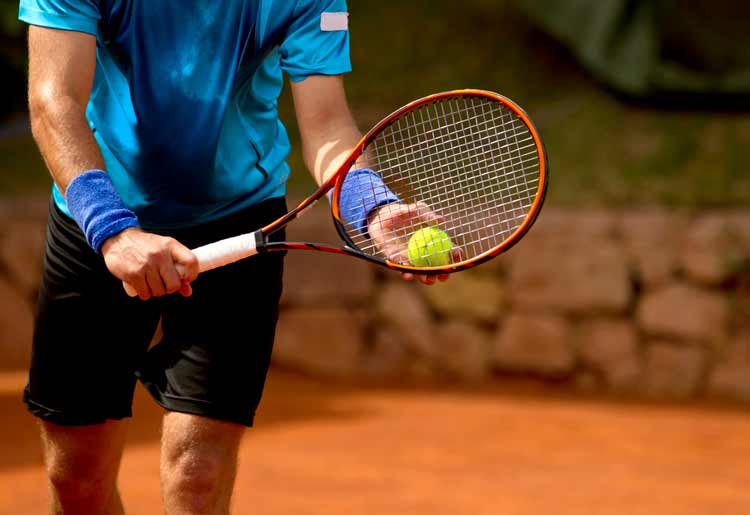
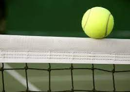
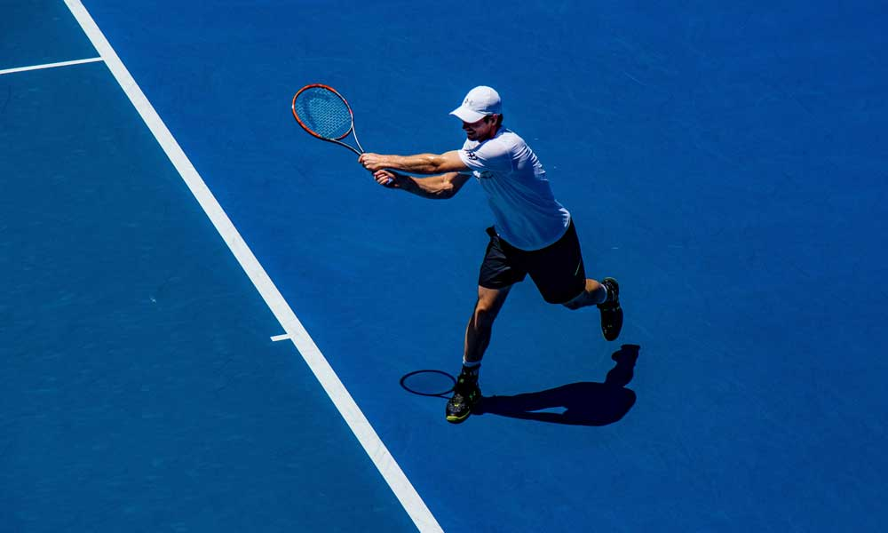
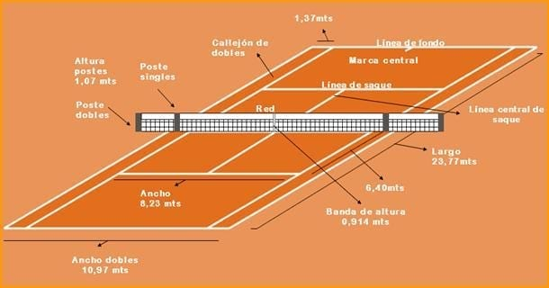

Puntuación
El tenis se juega en sets y juegos. Un set se compone de juegos, y un juego se compone de puntos. Para ganar un juego, un jugador debe ganar al menos cuatro puntos y tener una ventaja de al menos dos puntos sobre su oponente. Para ganar un set, un jugador debe ganar al menos seis juegos y tener una ventaja de al menos dos juegos sobre su oponente.
Saque
El saque es el golpe inicial de cada punto. Se realiza desde detrás de la línea de saque y debe cruzar la red y caer en el cuadro de servicio diagonalmente opuesto. El jugador debe alternar los lados del cuadro de servicio después de cada punto.
Let
Si el saque toca la red y luego cae en el cuadro de servicio opuesto, se llama "let". En ese caso, el jugador tiene derecho a un segundo intento de saque sin penalización.
Regla de ventaja
Cuando un juego llega a un empate de 40-40, se llama "iguales". A partir de ese punto, los jugadores deben ganar dos puntos consecutivos para ganar el juego. Si un jugador gana un punto después del empate, se dice "ventaja" para ese jugador. Si el mismo jugador gana el siguiente punto, gana el juego. Sin embargo, si el jugador pierde el punto, el juego vuelve a "iguales".
Líneas de juego
Las líneas laterales y de fondo son consideradas dentro de los límites de juego. Si una pelota toca cualquier parte de la línea, se considera buena. Sin embargo, las líneas de saque son consideradas fuera de los límites, por lo que el saque debe cruzar la red y caer dentro del cuadro de servicio diagonalmente opuesto.



